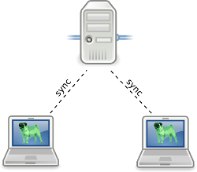

Usage¶
Comment utiliser Persy pour un être humain normal (si ces explications ne vous semblent pas assez “humaines”, prévenez moi).
Guide rapide¶
Pour faire simple, démarrez juste Persy :
1 | persy
|
Persy peut également être lancé depuis le menu de démarrage, dans la catégorie des accessoires. Vous pouvez maintenant ajouter des répertoires à synchroniser dans Persy. Pour faire cela, allez dans le menu des paramètres, choix “Sauvegarde” (voir l’image ci dessous)

Les répertoires synchronisés et les fichiers surveillés doivent être indiqués avec leur chemin absolu (commençant par /) ou avec le chemin relatif depuis votre dossier personnel.
Après avoir paramétré les répertoires à synchroniser (et éventuellement passé en revue les autres options de configuration), vous voudrez démarrer la synchronisation par Persy. Pour cela, faite juste un clic droit sur l’icône de la barre d’état et cochez le choix “Démarrer/Arrêter Persy”.

C’est tout; à partir de maintenant, Persy fonctionne et sauvegarde vos fichiers.
Guide rapide en ligne de commande¶
Vous pouvez également réaliser cette configuration en ligne de commande. C’est une méthode recommandée uniquement pour les utilisateurs expérimentés, et il n’est pas nécessaire de procéder ainsi si vous avez configuré Persy par son menu de paramétrage.
1 2 3 4 | persy --config --uname=USERNAME
persy --config --mail=MAIL
persy --config --add_dir=DIR
persy --start
|
Vous pouvez configurer votre environnement de bureau pour qu’il lance Persy à la connexion.
Configuration pour un dépôt sur un serveur distant¶
Si vous souhaitez synchroniser ou sauvegarder vos fichiers sur un dépôt d’un serveur distant, vous devez activer une authentification à clé publique sur le serveur (plus d’information sur progit.org). Aucun module logiciel ‘serveur’ de Persy n’est nécessaire comme le montre cette illustration :
Le serveur distant à juste besoin de disposer d’un serveur ssh avec une authentification à clé publique et du paquet git-core.
Vous avez simplement à configurer Persy sur le poste client.
###Configuration d’un dépôt distant et connexion du premier client Persy
L’enchainement normal avec un serveur distant vierge et un dépôt local déjà initialisé est le suivant :
1 2 3 4 | persy --config --hostname=SERVER
persy --config --path=PATH
persy --initRemote
persy --start
|
###Configuration d’un second client Persy à un dépôt existant
L’enchainement normal avec un serveur distant déjà initialisé et sans dépôt local est le suivant :
Warning
Les répertoires locaux doivent être vides pour lancer la synchronisation. Il y a quelques problèmes avec les fichiers pré-existants. Vous devez démarrer la synchronisation puis ajouter des fichiers dans le répertoire.
1 2 3 4 5 6 7 | persy --config --uname=USERNAME
persy --config --mail=MAIL
persy --config --hostname=SERVER
persy --config --path=PATH
persy --config --add_dir=DIR
persy --syncwithremote
persy --start
|
Limitations¶
Persy présente certaines limitation de son utilisation. Certaine sont justes ‘bonnes à savoir’, d’autres peuvent perturber l’utilisation. que vous souhaitez en faire.
Persy ne peut pas synchroniser des répertoire vides. C’est un problème interne à git qui sera, j’espère, réglé dans une future version. Les répertoires propres à git inclus dans l’arborescence synchronisée ne peuvent pas être eux-mêmes synchronisé. C’est aussi un problème lié à la façon dont git gère les dépôts dans les dépôts (“sous-modules”). Si VOUS avez une idée de solution à ce problème qui n’induise pas de “hack”, n’hésitez pas à me contacter.
Utilisation avancée¶
Vous pouvez utiliser Persy sans serveur central auprès duquel tous les clients se synchronisent (voir l’illustration ci dessus). Vous pouvez aussi utiliser Persy sur une seule machine, pour synchroniser deux répertoires (dépôts) sur des systèmes de fichiers différents. Toutefois, ce n’est pas l’usage principal et il ne sera pas développé dans le client logiciel ou son interface. Vous pouvez toutefois configurer cela dans le fichier de paramétrage de git pour Persy (~/.persy/git/config) et je ferais attention à ne pas gêner cela dans le code. Si vous avez des questions relatives à ces configurations spéciales, n’hésitez pas à me contacter.
Utilisation avec un serveur SVN (experimental)¶
Vous n’êtes pas obligé d’utiliser git pour vous synchroniser avec votre serveur distant. SVN est une autre solution pour vous y connecter. Persy utilise git-svn comme pont entre le client (git) et le serveur (svn).
Warning
Ce n’est pas fortement testé et cela existe “juste parce que c’est possible”.
Effacez le répertoire .persy dans votre Dossier personnel. Faites un arrêt/démarrage de Persy pour régénérer les fichiers de configuration. Effacez le répertoire du dépôt git dans .persy/git Éditer le fichier .persy/config et ajoutez “use_gitsvn = True” à la section ‘distant’ Initialisez Persy manuellement :
1 2 3 | . persy --setenv # mode manuel pour persy
git svn init <SVNREPOSITORYURL>
git checkout -b local-svn remotes/git-svn
|
Démarrez Persy, autorisez la synchronisation avec le dépot distant et voyez si ça marche ! A cause de la nature quasiment non-supporté de cette fonctionnalité, beaucoup de paramètres de Persy deviennent inopérant ou sans objet.
L’indicateur d’état de Persy¶
Pendant son fonctionnement, Persy peut passer par divers états. Un état est une représentation simplifiée du processus de synchronisation et de sauvegarde des fichiers. La plupart ont une signification évidente.
| Icône | Etat |
|---|---|
| Dormant; Persy ne fonctionne pas | |
| Il existe des modifications qui ne sont même pas sauvegardées dans le dépôt local. | |
| Toutes les modifications sont sauvegardées dans le dépôt local. | |
| Toutes les modifications sont sauvegardées dans le dépôt local ET ont été répercutées sur le dépôt distant. | |
| Attention ! | |
| Erreur ! |